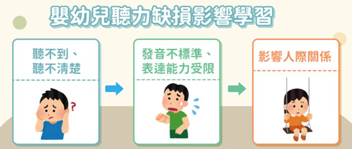

月號－哺乳育嬰站
月號－哺乳育嬰站通常寶寶出現聽力缺損問題時，不太會自己表達，因此爸媽要特別注意寶寶出生之後的聽力檢查和發展歷程，如果確診為聽力缺損，越早治療越不會影響到寶寶的學習發展。 |
||||||||||||
| 嬰幼兒聽力缺損是什麼？ | ||||||||||||
當發現寶寶對聲音較沒反應，或是呼喚寶寶時沒有回應，那寶寶可能就會有聽力缺損。聽力缺損的形式，可分為傳導型、感音神經型、混合型三種，而聽覺障礙是指聽覺機能永久性缺損、聽力損失在25分貝以上。
|
||||||||||||
根據統計，台灣新生兒先天性聽力損失發生率約每千人中3至4人為聽損兒，所以，幼兒聽障若能得到早期診斷及適當的治療、復健，便有可能改善其語言學習以及和別人溝通的能力。 |
||||||||||||
| 嬰幼兒聽力發展歷程 | ||||||||||||
一般而言，幼兒聽力在出生後會有循序漸進的發展，振興醫院耳鼻喉科主治醫師張智惠表示，嬰幼兒因為還不會講話，所以沒有辦法清楚表達，因此父母或家人只能靠嬰幼兒一些反應來觀察是否有在正常的生長曲線，而每個小朋友的成長速度不太一樣，但有一些界定的範圍：
|
||||||||||||
| 如何診斷嬰幼兒聽力缺損？ | ||||||||||||
聽覺障礙常以分貝數來分類，又分為輕度、中度、重度。正常的聽力檢查其範圍應小於20分貝，數字越小代表越小的分貝數都能聽清楚，以下為聽力缺損的程度判別標準： |
||||||||||||
| 嬰幼兒聽力缺損有什麼影響？ | ||||||||||||
聽力缺損的孩子，因為聽不太到，所以學語言會比較慢，聽不太清楚時，說話發音也會不準確，另外像是語言溝通或上學之後的學習、人際交流、對事情的認知等，皆會比正常的小朋友遇到較多的困難。簡單來說，聽力缺損會影響到孩子生活品質，也會影響到學習的狀況、速度。 |
||||||||||||
|  | ||||||||||||
| 嬰幼兒聽力缺損：分為先天、後天性 | ||||||||||||
|
||||||||||||
| 嬰幼兒聽力缺損高危險族群有哪些？ | ||||||||||||
國健署表示，目前全國有317家醫療院所提供新生兒聽力篩檢、57家提供新生兒聽力診斷服務，而如果為聽力損失之高危險群，更需要注意早期篩檢、確診及介入療育，聽力損失高危險族群包含：
|
||||||||||||
| 嬰幼兒聽力缺損篩檢方式為何？ | ||||||||||||
1. 自動聽性腦幹反應檢查（aABR） |
||||||||||||
| 如何治療嬰幼兒聽力缺損？ | ||||||||||||
聽力損失分成三種類型，其介入治療方式也有所不同：
|
||||||||||||
| 資料來源 發展遲緩可能是與聽力缺損有關！守住孩子的健康就要從聽力篩檢做起 - Heho親子 |
||||||||||||